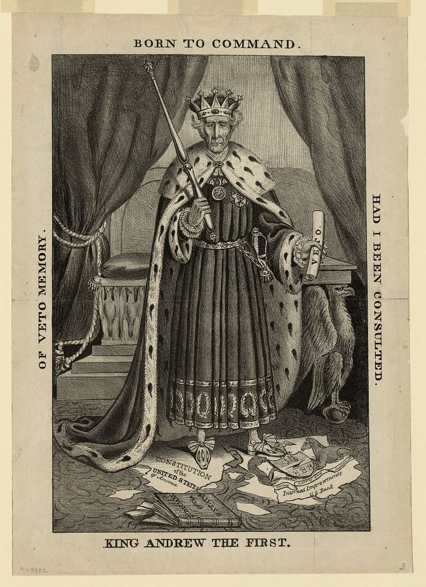

| Field | Detail |
| TOC Fit | Chapter 10 · Essay prompt 10.4 (The Bank War and the Panic of 1837); Essay prompt 10.5 (Judging Jackson's Presidency) |
| Why Here | An opposition print casts Jackson as a crowned monarch trampling the Constitution with a veto in hand. Students can read it as an argument by its maker about what the Bank War meant for the presidency, and compare its charge of executive tyranny with Jacksonian claims that the president spoke for the people. |
| Treatment | Public-domain image; printed words as recorded in the repository catalog |
Andrew Jackson used the veto more often than all six earlier presidents combined, and he used it on policy grounds rather than only on constitutional ones. His July 1832 veto of the bill to recharter the Second Bank of the United States became the central issue of that year’s election. In September 1833, after his reelection, he ordered federal deposits withdrawn from the Bank and placed in state banks, firing a Treasury secretary who refused to carry out the order. Jackson’s opponents, who were organizing as the Whig Party by 1834, took their name from the British party that had resisted royal power. They argued that Jackson acted like a king who placed his own will above Congress, the courts, and the law. This lithograph, probably sold in late 1833, turned that argument into a single image that viewers could grasp at a glance. Jackson stands in royal robes before a throne, a scepter in one hand and a veto in the other, while a torn Constitution and the torn arms of Pennsylvania, home state of the Bank, lie under his feet. Editorial note. The Library of Congress dates the print to 1833 and links it to the removal of the deposits; Frank Weitenkampf’s catalog of American political prints dates it to 1832 and the veto. Weitenkampf also records a variant with twenty lines of letterpress below the image; the copy reproduced here lacks that text. The printed words below are taken from the Library of Congress catalog description and should be checked against the image. CAUTION: This is an image made to persuade. Read it as the argument of Jackson’s opponents, not as a neutral account of his conduct. |
|
 |
|
UNIT 3 · AN EXPANDING NATION | HISTORY B17A | DANIEL GARZA, M.A.
|